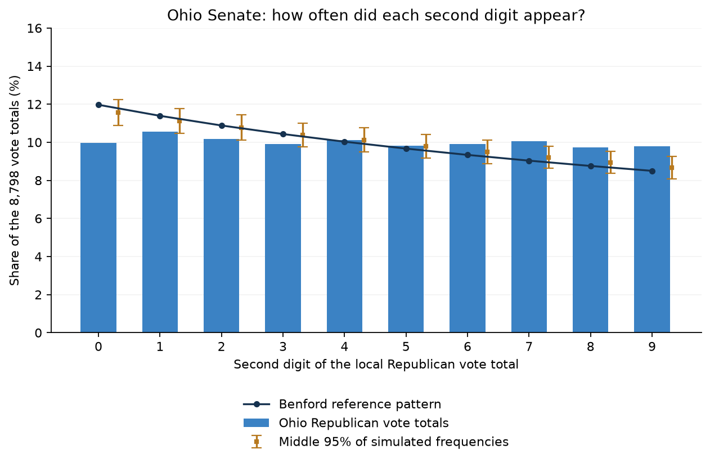
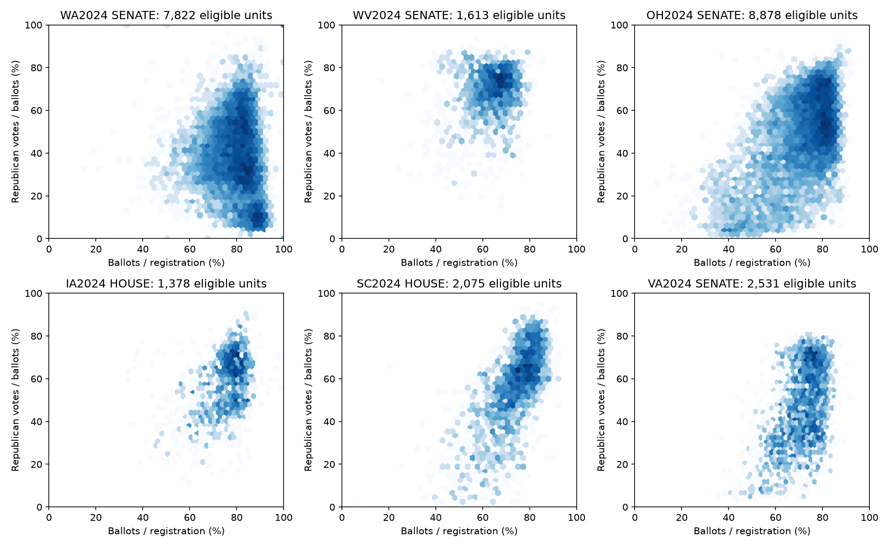
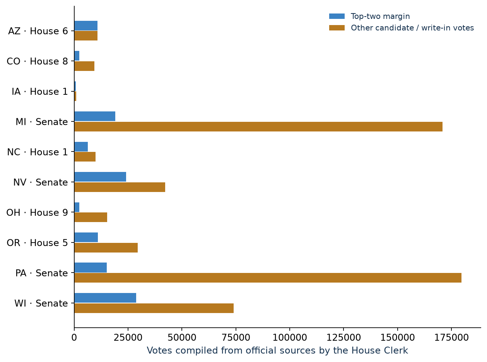

Ohio has a number pattern worth checking
The Ohio Senate vote-count digits stood out against two expected patterns. That alone cannot tell me why the pattern appeared or whether anything went wrong. Read the Ohio finding ↓
I checked vote totals from 47,236 local reporting areas. In the Ohio Senate race, the digits in Republican vote counts looked unusual against two expected patterns. The cause is unresolved: these checks cannot tell me whether it reflects ordinary differences between reporting areas, a data problem or manipulation. See the Ohio finding ↓
Could other candidates’ voters change the winner?
In ten races, votes for candidates outside the top two outnumbered the winner’s lead. If enough of those voters had chosen the runner-up instead, the winner could have changed. I do not know whether they would have.
The Ohio Senate vote-count digits stood out against two expected patterns. That alone cannot tell me why the pattern appeared or whether anything went wrong. Read the Ohio finding ↓
Minnesota checked paper ballots by hand in 219 precincts. All 657 race checks passed the state’s rules. Some small differences remained. This finding applies only to the precincts checked.
In ten close races, there were enough votes for other candidates to change the winner on paper. But counting those votes does not tell me who those voters would choose in a two-person race.
The second digit in Republican vote counts appeared in an unusual pattern. The second digit of 1,234 is 2. Benford’s law gives one expected pattern for these digits, although it does not fit every dataset. I compared how often digits 0–9 appeared across 8,798 local Republican vote totals with that pattern. I also used a second model fitted to the sizes of Ohio’s vote totals.
Ohio stood out in both comparisons, even after allowing for the many tests in this study. It was the only 2024 case to do so. Seven cases from older elections also stood out in both comparisons.
Blue bars show Ohio’s results. Each bar shows how often a second digit appeared among the 8,798 Republican vote totals. The dark line shows the Benford reference pattern. The amber markers show the range usually produced by a model fitted to the sizes of Ohio’s vote totals.

What stands out: about 10% of Ohio’s totals have 0 as the second digit, compared with about 12% in the Benford pattern. Digits 7, 8 and 9 appear more often than that pattern predicts. Overall, Ohio’s bars are flatter than the reference line.
A gap between a bar and a reference shows a difference from that model. It does not show how many votes were wrong. The overall finding considers the pattern across all ten digits.
It gives me a reason to look more closely at the records. It does not tell me that votes were added, removed or switched. The two comparisons use the same vote counts, so they are not two independent pieces of evidence.
The models do not fully account for differences in reporting-area size or voter makeup. Those differences could help explain the pattern. This check cannot tell me how many votes might be affected or whether the winner would change.
A useful next step would be to check the original Ohio records, see which areas contribute most to the pattern, and repeat the comparison using areas of similar size and voting habits. Paper-ballot checks would provide evidence that digit patterns alone cannot.
I tested the second digits of 8,798 Republican Senate vote totals, each at least 10. Against Benford’s expected pattern, p = 9.44 × 10−14 and adjusted q = 2.18 × 10−11. Against the fitted lognormal model, using 20,000 simulations, p = 1/20,001 (about 0.00005) and adjusted q = 0.00496. A p-value describes how unusual a result is under the chosen model. The q-value also allows for the many tests run. Both comparisons remain below q < 0.05 after separate adjustments across all 694 digit tests. Neither value is the probability that fraud occurred.
I used an archived copy of the Ohio data from a separate repository. I did not download it directly from the state for this analysis. It is missing 640 Senate write-in votes compared with the House Clerk’s totals, but it includes the named Republican candidate’s counts used here. The models also leave out some differences between reporting areas.
All digit-test results (CSV) · Full statistical report · Source checks and discrepancies
The clearest lead was in Ohio. The other checks did not establish fraud. Normal differences between communities can also produce unusual-looking results, and these tests can miss problems.
110 samples from 2024 races · 65 samples from earlier races · 694 digit tests.
Ten digit tests found unusual patterns against the standard expected distributions. Eight did so against a lognormal model fitted to the vote-count sizes, and all eight also stood out in the first comparison. These results allow for the number of tests run, using the Benjamini–Hochberg adjustment separately for each comparison. Only one of the eight cases is from 2024. Neither model captures every difference in area size or voter makeup.

Those votes alone do not tell me whether anything went wrong.
For each sample, I set a high-turnout cutoff at its own 99.5th percentile, weighting areas by registered voters. Only 0.5% of that weighted distribution lies above the cutoff. In the 2024 samples, the areas above it contain 0–1.489% of votes for the leading party group. I have not established what the turnout curve would look like without manipulation, so I cannot turn this into a count of fake votes or a corrected result. Earlier elections provide context; they do not compare exactly the same precincts.
The pattern changes from state to state. Differences between communities can explain it.
For each race, I measured the link between turnout and party support, giving areas different weights. I also measured the link after removing each county’s average. These correlation values are available to download. The direction of the link changes between states and follows geography, so it does not support a nationwide fraud claim. Support means candidate votes divided by all ballots, including ballots with no vote in that race.
They do, but different voting patterns are not evidence of fraud.
For each race with usable data, a model fits two bell-shaped groups to the chart. It describes differences between reporting areas. It does not model how fraud would add or change votes, as the original research method does. The share assigned to either group is not a fraud rate.
No warning remained after allowing for the number of tests I ran.
I checked 525 measures, using 1,000 binomial simulations for each: made-up counts generated under the chance model. I looked for too many whole percentages and too many multiples of five, giving 1050 comparisons in all. After allowing for all those comparisons, 0 measures raised a warning under the bell-curve (normal) approximation used here. That approximation can be unreliable when unusual outcomes are rare, and the simulations use probabilities estimated from the same data. The largest results in the table are starting points for further checks.
Ohio’s Republican Senate counts stood out against two expected patterns. This needs a closer look.
I ran 694 digit tests. Second-digit tests use vote totals ≥10 and last-digit tests use totals ≥100; each test needs ≥100 usable totals. After separate Benjamini–Hochberg (BH) adjustments for the number of tests, 10 tests stood out against the standard patterns and 8 against the fitted lognormal model; 8 stood out in both. The first model check used 400 simulations. I then repeated 12 tests with 20,000 simulations: every standard-pattern BH flag and every result at the smallest p-value the first simulation could measure. The finer check can reach p=1/20,001. Before applying BH again across the full set, I assigned p=1 to tests not selected for the finer check. This avoids treating a coarse simulation limit as evidence that no pattern exists. Neither model captures all differences between election areas.
The checks give me places to review, not a list of fraudulent results.
Comparing areas with their county’s typical result flagged 2,753 area-and-race records across current and earlier elections. This uses the median and median absolute deviation (MAD), a measure of spread. A separate computer method, Isolation Forest, flagged 1,451 records. Areas in the same county are not necessarily neighbours or socially similar. The computer method is set to select 1% as unusual; it was not trained on known fraud cases.
Yes. Small reporting areas can match by chance.
In 1,673 rows, all five totals repeat another row: registered voters, ballots, Democratic votes, Republican votes and other votes. Small precincts can match by chance. To judge whether this is unusually common, I would need a chance model suited to these areas. Split precincts and overlapping Washington sources are not counted as separate independent precincts.
Yes. A made-up test case went undetected, so a clean result is no guarantee.
I added 45,950 made-up Republican votes to a copy of the Minnesota Senate data. Keeping the original turnout cutoff at 92.56%, Republican votes above it rose from 9,401 to 156,258. This includes genuine votes in areas pushed above the cutoff, so the increase does not measure the number added. In another test, I altered 194 areas to produce round turnout percentages. The z score, which measures distance from the expected result, rose from -1.49 to 0.31 and raised no warning. That simulated problem went undetected. These examples show limits on detection; they do not let me estimate a fraud rate.
The digit table lists every warning from either comparison model and shows both results. For round percentages, the adjusted q-values use a normal approximation, allowing jointly for whole percentages and multiples of five. They are not exact probabilities from the simulations.
| Source / office | District | Party group | Counts | Theoretical p | Adjusted q | Fitted-model p | Fitted adjusted q |
|---|---|---|---|---|---|---|---|
| CA2020 HOUSE | 027 | DEM | 227 | 0.000338 | 0.0261 | 0.0005 | 0.0434 |
| CA2020 HOUSE | 028 | DEM | 215 | 2.19e-10 | 2.53e-08 | 5e-05 | 0.00496 |
| CA2020 HOUSE | 030 | DEM | 213 | 6.44e-18 | 4.47e-15 | 5e-05 | 0.00496 |
| CA2020 HOUSE | 032 | DEM | 235 | 7.01e-12 | 9.73e-10 | 5e-05 | 0.00496 |
| CA2020 HOUSE | 033 | DEM | 212 | 1.71e-08 | 1.69e-06 | 5e-05 | 0.00496 |
| CA2020 HOUSE | 043 | DEM | 224 | 0.000677 | 0.047 | 0.00075 | 0.0578 |
| CA2020 PRESIDENT | STATEWIDE | DEM | 15524 | 1.01e-14 | 3.49e-12 | 5e-05 | 0.00496 |
| OH2024 SENATE | STATEWIDE | REP | 8798 | 9.44e-14 | 2.18e-11 | 5e-05 | 0.00496 |
| WA2020 PRESIDENT | STATEWIDE | DEM | 7117 | 5.96e-12 | 9.73e-10 | 5e-05 | 0.00496 |
| WA2024 SENATE | STATEWIDE | DEM | 7657 | 6.52e-06 | 0.000565 | 0.0013 | 0.0902 |
| Source / office | District | Metric | Units | Integer hits | z | Adjusted q (approx.) |
|---|---|---|---|---|---|---|
| MN2016 HOUSE | 006 | turnout | 277 | 12 | 3.36244 | 0.25036 |
| CA2024 HOUSE | 29 | share:votes:REP | 135 | 6 | 2.69765 | 0.91653 |
| MN2016 HOUSE | 007 | share:votes:REP | 1316 | 102 | 2.46101 | 0.95306 |
| CA2024 HOUSE | 32 | share:votes:DEM | 173 | 8 | 2.41574 | 0.95306 |
| CA2024 HOUSE | 44 | share:votes:DEM | 167 | 7 | 2.38953 | 0.95306 |
| VA2024 HOUSE | 010 | share:votes:REP | 196 | 5 | 2.07313 | 1.00000 |
| CA2024 HOUSE | 17 | share:votes:DEM | 217 | 8 | 1.99799 | 1.00000 |
| VA2024 HOUSE | 008 | turnout | 170 | 4 | 1.99272 | 1.00000 |
| CA2024 HOUSE | 48 | share:votes:DEM | 429 | 21 | 1.83787 | 1.00000 |
| CA2020 HOUSE | 043 | turnout | 229 | 10 | 1.82714 | 1.00000 |
| Source / office | District | Reporting areas | Turnout–Republican link (weighted r) | Link after removing county averages (r) | Turnout (%) | Votes above turnout cutoff (%) |
|---|---|---|---|---|---|---|
| CA2020 PRESIDENT | STATEWIDE | 17241 | 0.2730 | 0.2728 | 81.047 | 0.6326 |
| CA2024 SENATE | STATEWIDE | 17867 | 0.1176 | 0.3029 | 71.390 | 0.8391 |
| MN2020 SENATE | STATEWIDE | 4075 | 0.3808 | 0.4847 | 85.576 | 0.3653 |
| MN2024 SENATE | STATEWIDE | 4075 | 0.3154 | 0.4006 | 82.162 | 0.5182 |
| OH2024 SENATE | STATEWIDE | 8878 | 0.5000 | 0.5925 | 71.709 | 0.6024 |
| VA2024 SENATE | STATEWIDE | 2531 | 0.4680 | 0.5648 | 70.521 | 0.4785 |
| WA2020 PRESIDENT | STATEWIDE | 7278 | -0.1233 | 0.0288 | 84.132 | 0.8748 |
| WA2024 SENATE | STATEWIDE | 7822 | -0.1044 | 0.0102 | 78.953 | 0.6375 |
| WV2024 SENATE | STATEWIDE | 1613 | 0.2004 | 0.2494 | 63.893 | 0.4403 |
The earlier data do not follow exactly the same precincts over time. District maps, reporting boundaries, pandemic voting and definitions of registration differ. Minnesota 2016/2020, California 2020 and Washington 2020 therefore cannot, by themselves, show what a nationwide election without manipulation should look like.
Download: metrics · digit tests · integer screens · outlier rankings · sensitivity checks.
Every check passed the state’s rules. This gives me evidence from actual paper ballots for the places reviewed, but it cannot tell me about places that were not checked.
The official 438-page report contains 657 tables, each covering one race in one of 219 precincts. Before the report’s adjustments, 115 tables show a difference between totals; afterward, 24 do. Adding the differences across candidate and ballot categories gives 365 before adjustment and 28 afterward. These sums do not count unique disputed ballots. The official label ACCEPTABLE means a check met the state’s allowed tolerance, even if the totals were not identical.
I extracted each table’s status and totals and checked the arithmetic. The Luna model separately checked four tables on three page images; it did not visually review all 438 pages. The hand count gives paper-ballot evidence for the sample reviewed. It says nothing directly about precincts outside that sample. Review summary (JSON) · Every review table (CSV).
I used 47,236 local reporting areas, including precincts, groups of precincts and central vote-counting pools. This is only part of the country. Not every area had enough usable data for every test.
The study focuses on Senate and House races. Older elections help put the findings in context, but changes in boundaries and voting rules make direct comparisons difficult.
| Source / office | Rows | Usable | Unknown | Zero base for percentage | Count above registered voters | Votes > ballots | Source limits |
|---|---|---|---|---|---|---|---|
| CA2020 HOUSE | 21346 | 17241 | 0 | 3928 | 357 | 0 | 0 |
| CA2020 PRESIDENT | 21346 | 17241 | 0 | 3928 | 357 | 0 | 0 |
| CA2024 HOUSE | 25245 | 17870 | 1974 | 5431 | 409 | 0 | 78 |
| CA2024 SENATE | 25245 | 17867 | 1974 | 5431 | 409 | 3 | 78 |
| IA2024 HOUSE | 1653 | 1378 | 2 | 271 | 273 | 0 | 0 |
| ID2024 HOUSE | 986 | 974 | 1 | 11 | 10 | 1 | 0 |
| MD2024 SENATE | 2227 | 0 | 514 | 4 | 16 | 335 | 2227 |
| MN2016 HOUSE | 4120 | 4083 | 0 | 31 | 6 | 0 | 0 |
| MN2020 HOUSE | 4110 | 4075 | 0 | 33 | 2 | 0 | 0 |
| MN2020 SENATE | 4110 | 4075 | 0 | 33 | 2 | 0 | 0 |
| MN2024 HOUSE | 4103 | 4075 | 0 | 28 | 0 | 0 | 0 |
| MN2024 SENATE | 4103 | 4075 | 0 | 28 | 0 | 0 | 0 |
| MS-Union2024 HOUSE | 20 | 20 | 0 | 0 | 0 | 0 | 0 |
| MS-Union2024 SENATE | 20 | 20 | 0 | 0 | 0 | 0 | 0 |
| OH2024 HOUSE | 8915 | 8841 | 0 | 0 | 0 | 0 | 74 |
| OH2024 SENATE | 8878 | 8878 | 0 | 0 | 0 | 0 | 0 |
| SC2024 HOUSE | 2674 | 2075 | 366 | 206 | 154 | 0 | 90 |
| VA2024 HOUSE | 2695 | 2523 | 156 | 2 | 0 | 2 | 38 |
| VA2024 SENATE | 2675 | 2531 | 144 | 2 | 0 | 2 | 0 |
| VT2024 HOUSE | 247 | 0 | 0 | 0 | 0 | 0 | 247 |
| WA2020 PRESIDENT | 7436 | 7278 | 85 | 68 | 6 | 1 | 0 |
| WA2024 HOUSE | 7824 | 7821 | 0 | 2 | 3 | 0 | 0 |
| WA2024 SENATE | 8136 | 7822 | 202 | 111 | 3 | 0 | 0 |
| WV2024 HOUSE | 1651 | 1613 | 2 | 35 | 35 | 0 | 0 |
| WV2024 SENATE | 1651 | 1613 | 2 | 35 | 35 | 0 | 0 |
Limits of the source files: I used Washington’s statewide file instead of the separate King County file to avoid overlap. Registration differs by 13 from the saved statewide table and by 4,521 from the active-voter comparison workbook. All county ballot totals and all 33 congressional candidate columns match. For Iowa, West Virginia and Ohio, I used archived copies from a separate repository rather than new downloads from official sites. Compared with the House Clerk’s totals, Ohio is missing write-ins: 640 Senate votes, 4 House district 2 votes and 29 House district 11 votes. The named candidates’ counts can still be tested. West Virginia’s other-candidate totals are short by 15 Senate votes and 174 House district 1 votes. I did not invent precinct counts to fill these gaps.
Records left out and why: Some House precincts are split between districts. I left out those fragments when turnout for the whole precinct could not be assigned to them reliably. In California, I also left out hidden counts, counts above registration, records where calculating a percentage would mean dividing by zero and records that could not be matched. Virginia and South Carolina records were matched by name after removing extra zero-padding from numeric codes; I checked for duplicate matches and kept unmatched records as unknown. South Carolina’s precinct ballots and registration add up exactly to its county and state Election History totals. I did not replace them with VREMS voter-history counts. All 247 Vermont town rows are excluded from the combined checks because towns crossing district lines have partial results and statewide candidate totals are incomplete. Maryland’s administrative participation figures still cannot be compared reliably. Wyoming and North Dakota lack registration totals; Pennsylvania lacks ballot totals; North Carolina provides registration only. I also left out provisional text extracted from scanned documents and four Kentucky PDFs. Correct arithmetic in extracted text does not establish that records have been matched correctly. Kentucky’s published turnout is unofficial, and its voter-roll date needs care.
| Source / office | District | Party group | Source total | Clerk total | Difference |
|---|---|---|---|---|---|
| OH2024 HOUSE | 002 | votes:OTHER | 0.0 | 4.0 | -4.0 |
| OH2024 HOUSE | 011 | votes:OTHER | 6107.0 | 6136.0 | -29.0 |
| OH2024 SENATE | STATEWIDE | votes:OTHER | 195648.0 | 196288.0 | -640.0 |
| VT2024 HOUSE | 001 | votes:DEM | 172146.0 | 218398.0 | -46252.0 |
| VT2024 HOUSE | 001 | votes:REP | 89076.0 | 104451.0 | -15375.0 |
| VT2024 HOUSE | 001 | votes:OTHER | 23356.0 | 27767.0 | -4411.0 |
| WV2024 HOUSE | 001 | votes:OTHER | 25616.0 | 25790.0 | -174.0 |
| WV2024 SENATE | STATEWIDE | votes:OTHER | 26075.0 | 26090.0 | -15.0 |
When the Clerk’s table has no category for a minor party, the comparison marks it unknown rather than counting it as a mismatch. All source rows, records that could not be matched and reasons for exclusion are saved in the record-matching audit.
In ten races, the votes for candidates outside the top two were larger than the gap between first and second place.
For example, Iowa’s 1st House district was decided by 799 votes. There were 967 write-in votes. If 800 of those voters had backed the runner-up instead, with the rest sitting out, the result would have flipped. I do not know if they would have made that choice.

| Contest | Margin | Other votes | Needed if rest abstain | Needed if rest back leader |
|---|---|---|---|---|
| AZ · House 6 | 10,822 | 10,850 | 10,823 | 10,837 |
| CO · House 8 | 2,449 | 9,425 | 2,450 | 5,938 |
| IA · House 1 | 799 | 967 | 800 | 884 |
| MI · Senate | 19,006 | 170,821 | 19,007 | 94,914 |
| NC · House 1 | 6,307 | 9,949 | 6,308 | 8,129 |
| NV · Senate | 24,059 | 42,197 | 24,060 | 33,129 |
| OH · House 9 | 2,382 | 15,381 | 2,383 | 8,882 |
| OR · House 5 | 10,945 | 29,508 | 10,946 | 20,227 |
| PA · Senate | 15,115 | 179,662 | 15,116 | 97,389 |
| WI · Senate | 28,781 | 74,014 | 28,782 | 51,398 |
Let M be the winner’s lead and O the votes for all other candidates. When O > M, those votes are numerous enough to change the winner on paper. If M+1 of those voters chose the runner-up and the rest sat out, the runner-up would win. If every remaining voter in that group backed the leader, the number needed is floor((O+M)/2)+1: half of O+M, rounded down, plus one. Neither scenario predicts their choices. Iowa House 1’s 967 other votes are all write-ins combined, not support for one candidate or a known group of like-minded voters.
I cannot say a candidate “spoiled” a race. The totals show what is possible on paper. They do not tell me anyone’s second choice.
I listed all 435 House and 33 regular Senate races and screened 448 contests in which the most votes win and multiple candidate records were available. Majority-rule and ranked-choice races, non-candidate ballots and Nevada’s “None of These Candidates” were excluded.
Full voting-rule checks and both vote-switch thresholds · Candidate totals with PDF pages · All race screens · MEDSL reconciliation · Official Clerk PDF.
These checks cannot tell me how many votes, if any, were fraudulent. They also cannot prove that every place without a warning sign was counted correctly.
Some records were missing or could not be compared reliably. I did not examine ballot handling or how results changed on election night. Minnesota’s hand check is the only paper-ballot review included here.
Because of these gaps, I cannot estimate a reliable fraud rate, establish a paradox involving voters’ preferences, or verify that every area without a warning was counted correctly.
This page uses the analysis dated 18 October 2026.
Full statistical report · Summary data · Comparing source totals · Where the downloads came from.
Bringing these sources together does not certify the election results again. The original archives remain with their providers. The tables and source notes here let you trace which saved data I used.